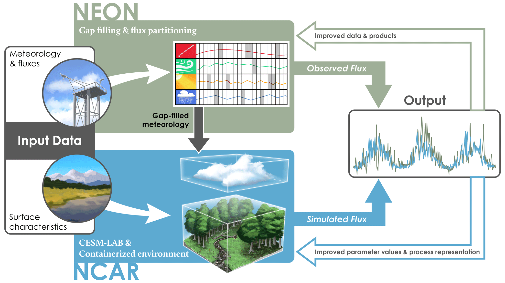

Single Point Overview#
Introduction#
Single point configurations are an efficient way to run CLM. These can be useful for model:
Development
Calibration
Evaluation with site-level observations
Unlike the atmosphere and ocean models, the physics in CLM are relatively scale independent. Furthermore, because individual grid cells don’t pass information between each other, single point runs are a great way to quickly run simulations and look at output. A few examples of recent papers that use single point capabilities include:
Kavoo et al. (2026) who calibrated CLM using PPE tools at three NEON sites before conducting regional simulations.
Jay et al. (2026) who ran with the hillslope hydrology model at the Niwot Ridge LTER.
Swenson et al. (2019) who started developing the hillslope model at the Reynolds Creek CZO.
All of these cases used flux tower observations to provide boundary conditions for the data atmosphere needed as inputs to the model. They also used eddy covariance data and other site-level observations to help calibrate model parameters and evaluate simulations. This is a time-tested way to develop and evaluate models (see Bonan et al. (1997)).
With the CLM6 release we are providing model configurations and atmospheric forcing for a number of supported towers with data from NEON and PLUMBER2 sites. Lombardozzi et al. (2023) provide an overview of running single point cases at NEON sites. Results from PLUMBER2 are described in Abramowitz et al. (2024) and Page et al. (2026). We’ll go through a few examples of running CLM at supported tower sites in this practical.

Figure: Conceptual diagram illustrating the integration of NEON data into single point runs with CLM (Lombardozzi et al. 2023).
Another way you can run single point, and regional, cases is by subsetting our standard data atmosphere (DATM) forcing and surface data. We won’t go over regional configurations in this tutorial, but will provide examples for running a ‘generic’ single point case too. Finally, you can provide your own DATM data to run single point cases. These could be from local meteorological observations, an ‘unsupported’ flux tower, or synthetic data you generate. We won’t go into this example, as it’s a pretty custom configuration of the input data.
The basics#
Running a single point introduces a few additional steps. This involves:
Subsetting the CLM surface dataset (this can also be customized for site-level conditions)
Formatting data atmosphere inputs; and
Creating, setting up, building, and submitting your case.
At supported tower sites, we’ve done steps 1-2 for you and streamlined creating and setting up your case. You can do this with the run_tower script, which simplifies a number of steps running single point cases. You can also set up supported tower sites manually, which can provide additional user control and case customization for the experiments you may want to run.
In this tutorial#
The tutorial has several components. Below you will find steps to create, setup, build, and run single point CLM cases:
Using the
run_towerfeature to quickly run a single point case at a NEON and PLUMBER2 site;From scratch at a NEON site. We’ll do this for CLM-FATES-SP and CLM-BGC case;
Creating a generic single point by subsetting the surface dataset and DATM forcing using the
subset datatool.
NOTICE: If you’re running the practical through a notebook on the NCAR JupyterHub login you need to be on a Derecho login node (NOT Casper).